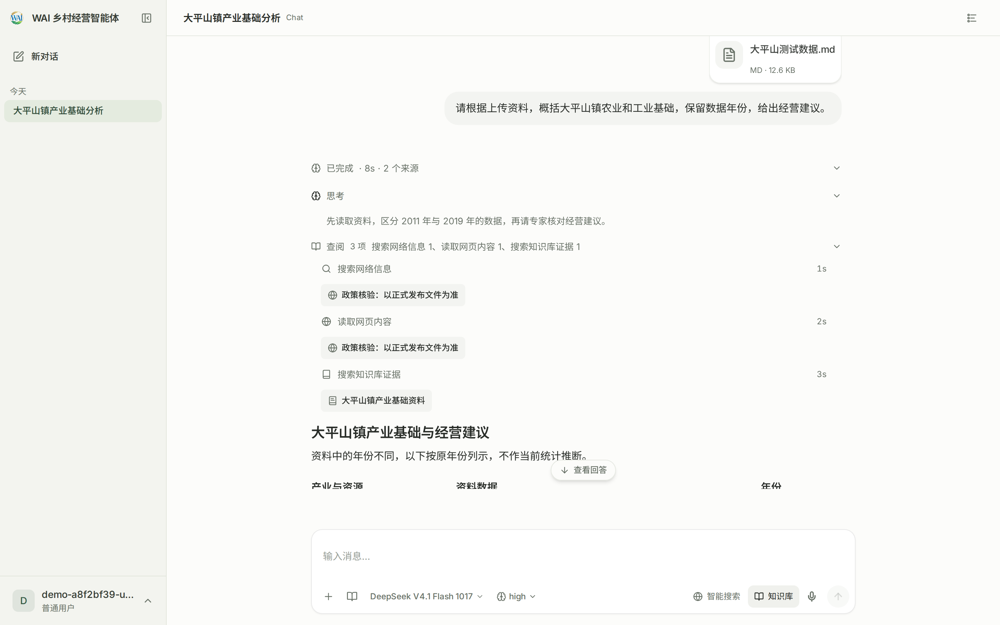
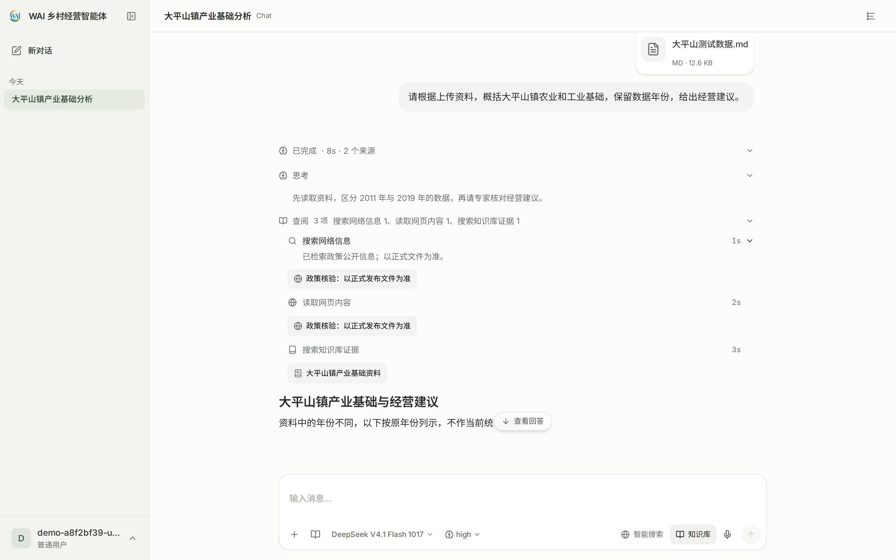
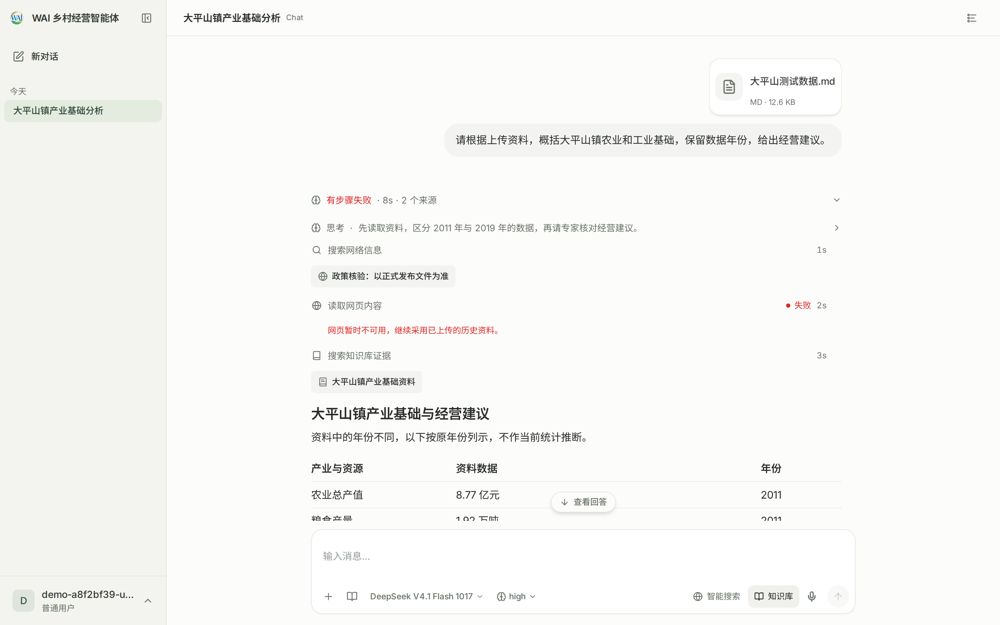
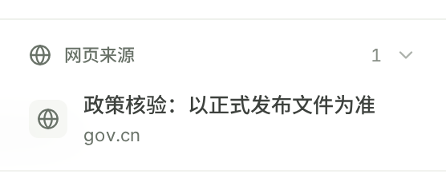
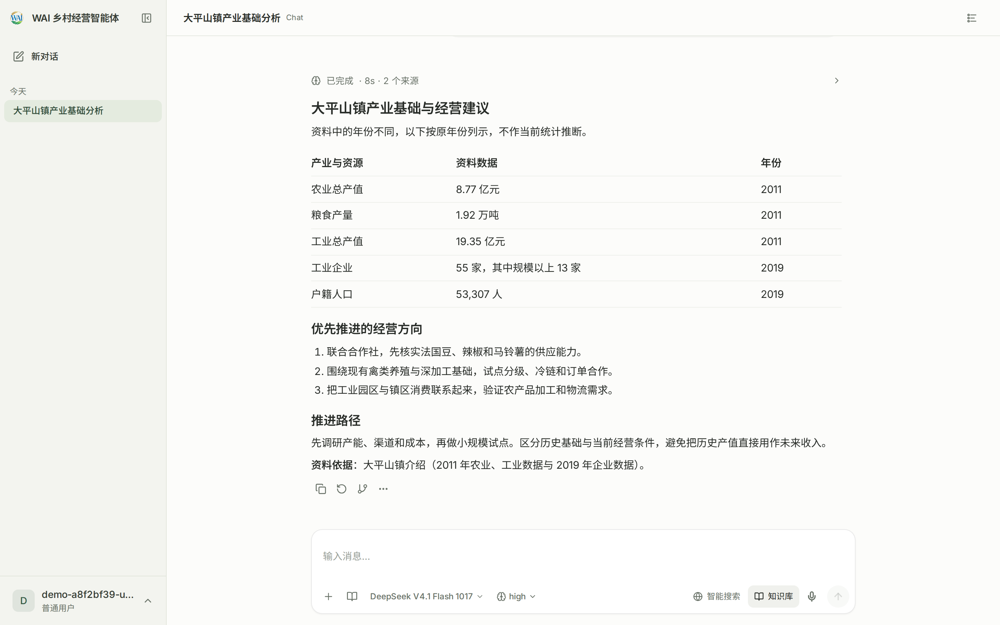

回答的组成
写进正式材料之前，需要知道一个结论是怎么来的。回答分成四个部分，其中过程区和参考来源专门用于核对：助手查了什么，读了哪份文件，引用了哪个网页。
#回答的四个部分
发送问题后，助手不会马上写出答案，而是先工作一段时间：想、查、读、算。这段工作过程和最终答案，在页面上分成四个部分，从上到下排列。

| 顺序 | 部分 | 内容 |
|---|---|---|
| 1 | 过程区 | 助手做了什么：思考、说明文字、工具调用 |
| 2 | 正文 | 回答本身，你真正要读的部分 |
| 3 | 参考来源 | 回答引用的网页或知识库条目，列在右侧会话详情里 |
| 4 | 操作行 | 复制、重新生成、分支、评价等按钮 |
先读正文，需要核对时再看过程区和参考来源。
#过程区
过程区回答一个问题：助手是怎么得出这个答案的。
助手工作时，过程区展开，标题写着「正在处理」，内容随着工作进展不断增加。回答完成后，标题变成「已完成」，后面跟着耗时，如果有专家或来源，还会显示数量，例如：
已完成 · 34s · 67 个来源
点这一行，可以展开或收起过程区。

过程区里有三类内容：思考、说明文字、工具调用。
#思考
思考是助手的内部推理。 它在回答之前分析问题，判断该先做什么、需要什么信息、哪个方案更合理。
过程区里，思考显示为一行带大脑图标的「思考」，点开可以读到推理的文字。

两点需要知道：
- 只有开启思考时才有。 思考强度为
off时，没有这一行。思考强度的设置见输入框与发送。 - 思考是推理草稿，不是结论。 助手可能在思考中提出一个想法，后来又推翻它。需要判断时，以正文为准。
#说明文字
在两次工具调用之间，助手有时会写一两句话，说明刚才得到了什么、下一步要做什么。例如：
我已找到一些相关政策，但其中几项是玉州区专门发布的，不属于兴业县。我接下来会核查兴业县具体的、正在执行的文件。
这些句子帮你跟上助手的思路。
#工具
工具是助手能执行的具体动作，比如搜索网页、读取文件、做计算。助手自己不能上网，也不能打开你的文件，它通过调用工具来完成这些事。
每次调用显示为一行，格式是：图标 + 动作描述 + 状态 + 耗时。例如：
已搜索网络：“玉林市 农产品加工 乡村特色产业 扶持政策 2026” 已完成 <1s
点工具行，可以展开这次调用的结果预览。

下表列出常见的工具行，以及它们的含义。
| 过程区里的文字 | 含义 |
|---|---|
| 已搜索网络：“关键词” | 用这个关键词联网搜索了一次。需要开启「智能搜索」 |
| 已读取网页：域名 | 打开并阅读了这个网站上的网页 |
| 查看文档目录 / 已阅读对话文档 / 查看文档页面 | 读取你上传的文件：先看目录，再读具体内容或页面 |
| 搜索对话文档：“关键词” | 在你上传的文件里按关键词查找 |
| 分析用户图片 | 识别你上传的图片内容 |
| 发现知识文档 / 搜索知识证据 / 查阅知识库材料 | 使用知识库：先找相关条目，再读原文段落。需要开启「知识库」 |
| 核对经营数据与算式 | 用计算工具核算数字，而不是凭感觉估算 |
| 核算现金流与回收期 | 计算现金流和投资回收期 |
| 核对预算与支出安排 | 检查预算数字是否对得上 |
| 规划任务（N 项） | 把工作拆成 N 项任务清单，清单显示在会话详情的「任务」里 |
| 创建文件 / 更新文件 / 阅读文件 / 查看工作目录 | 在这段对话的工作区里读写文件，Work 里才有 |
| 交付文件：文件名 | 把成果文件交给你，文件出现在会话详情的「输出」里 |
| 委派专家任务 / 查阅专家结果 | 主顾问把任务分给专家，并读取专家的结论 |
#状态：进行中、已完成、失败
每行工具都有一个状态：
- 进行中：正在执行。
- 已完成：执行成功。
- 失败：这次调用没有成功，旁边会显示红色的错误说明。
工具失败不等于整条回答失败。 助手经常在一次调用失败后换一种方法继续，比如换一个关键词，或者换一种读取方式。看最终的正文是否可用即可。
只有过程区标题显示「处理失败」，或者提示「本次分析未完成，请重试」时，才是整条回答没有完成。这时用「重新生成」再来一次。

#正文
正文是助手给你的答案，支持标题、编号列表、加粗和表格。内容较多时，页面向下滚动。
- 如果你想回到本轮回答的开头，点对话区下方的「查看回答」。
- 助手还在写的时候，点「回到底部跟随最新内容」，页面会跟着最新文字滚动。
#参考来源
回答引用的材料，列在对话右侧的会话详情的「来源」里，每条写着标题和出处。
- 网页来源：显示网页标题和网站域名，点击后在新窗口打开原网页。
- 知识库来源：标明「知识库」，点击后查看知识库条目。
展开过程区时，每次搜索下面也会列出这次找到的来源。来源较多时，先显示一部分，点「再显示 N 个参考来源」展开其余。

涉及政策、补贴、资金条件的内容，请点开来源核对原文。核对的方法见联网搜索。
#操作行
回答下方有一排按钮，你自己的提问下方也有一排。
回答下方：
| 按钮 | 作用 |
|---|---|
| 复制回答 | 把正文复制到剪贴板 |
| 重新生成 | 在当前会话对同一个问题再回答一次，保留可切换的答案版本 |
| 从此处分支 | 以这条回答为起点，开一段新对话 |
| 有帮助 / 没有帮助 | 对这条回答评价；再点一次撤销评价 |
| 更多 | 菜单里有「下载 Markdown」，把正文保存为 .md 文件 |

你的提问下方： 复制提问、编辑重发、从此处分支、更多。
「重新生成」保留在当前会话，可切换答案版本；「编辑重发」与「从此处分支」创建新会话。操作说明见历史、重试与分支。